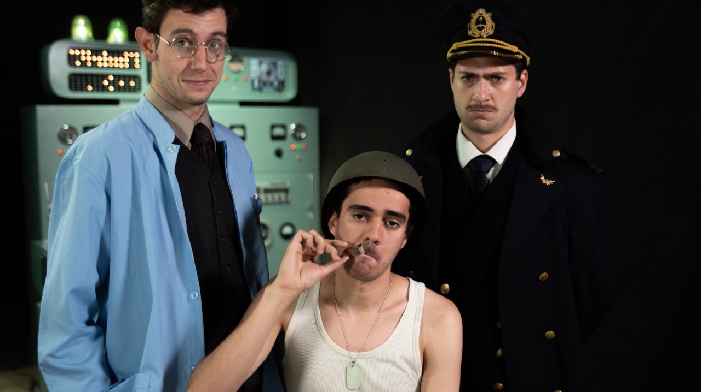

Bonus Track

Mano a mano
En esta entrega nos metemos en el detrás de escena de "Articulo 19: el experimento", la sátira teatral rosarina que aborda con humor negro la prohibición del cannabis y el absurdo del poder.
Entrevistamos a sus creadores para descubrir cómo transformaron una base militar de 1933, un experimento secreto y la voz de Darío Grandinetti en un fenómeno de la escena independiente. Conocé sus procesos creativos, anécdotas del montaje y secretos de producción que nunca salieron a la luz.
Mirá la entrevista completa y descubrí la historia viva del teatro rosarino.